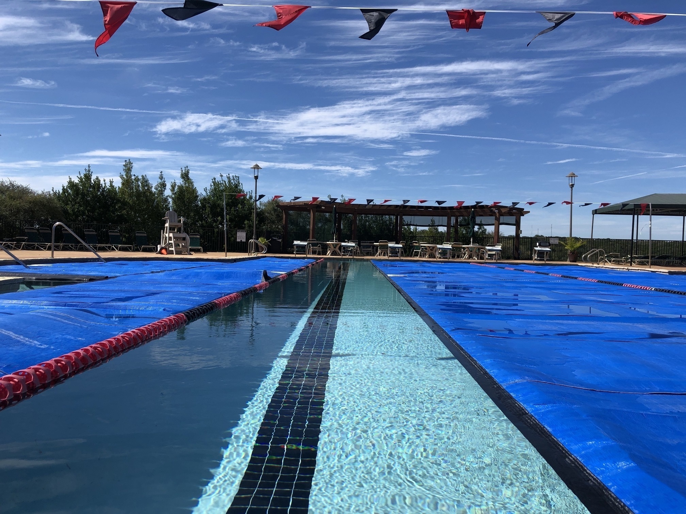

- Andrew Bain
- Home
- Experience
- Interests
- Contact

Just for fun!
A few things I enjoy besides watching a good movie...
A few things I enjoy besides watching a good movie...
I have always been fascinated with the ocean. For fun (and for credit) I remember attending Oceanography and Marine Biology courses in university. Growing up, I constantly read books about whales and dolphins, and eventually (in the late '80s), accomplished my childhood dream of becoming a (dolphin/whale) Trainer at SeaWorld!
I also enjoy photographing marine life and seascapes and publishing the photos on my websites. I am now an advocate for natural marine habitats.

As far back as I can remember, I’ve always been fascinated with computers, tinkering with gadgets, and learning new technologies. As I became older I realized I wanted to have a career in software development. I enjoy focusing on the creative aspect that coding provides, and it's especially rewarding to provide meaningful work that is helpful to others.


As cliché as it sounds, I really DO love to travel! I am grateful that I have been in positions that have allowed me to experience many different cultures, languages, and parts of the world.

I spent most of my early life swimming competitively. I don't swim competitively anymore, but I still enjoy swimming laps from time to time to stay in shape. Early on as a swimmer, I learned to be self-disciplined, to believe in myself and support my team, and to be a better person.
